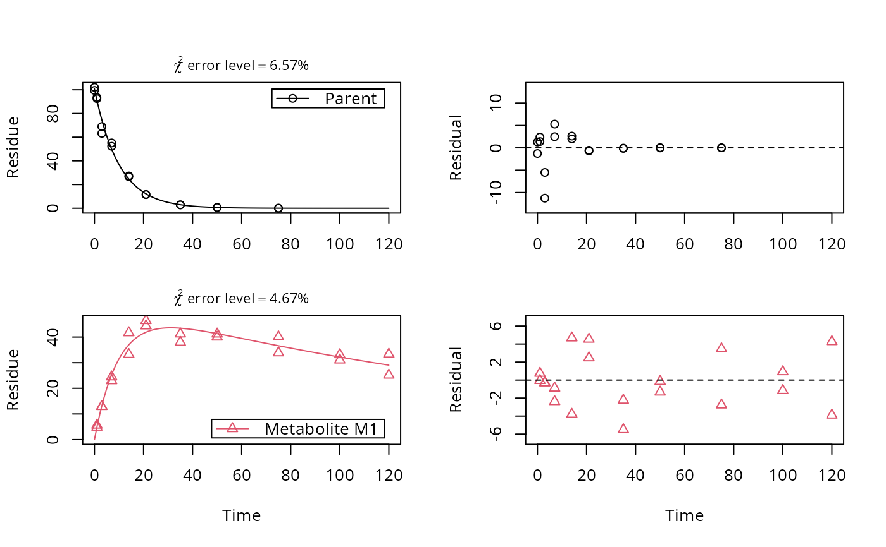
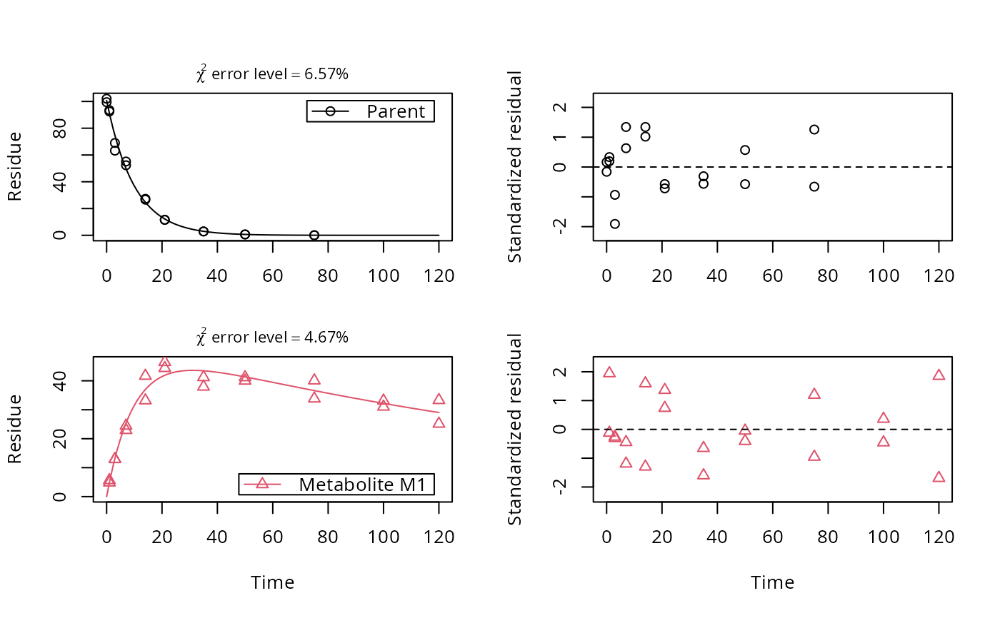

Plot the observed data and the fitted model of an mkinfit object
Source:R/plot.mkinfit.R
plot.mkinfit.RdSolves the differential equations with the optimised and fixed parameters
from a previous successful call to mkinfit and plots the
observed data together with the solution of the fitted model.
# S3 method for mkinfit plot( x, fit = x, obs_vars = names(fit$mkinmod$map), xlab = "Time", ylab = "Residue", xlim = range(fit$data$time), ylim = "default", col_obs = 1:length(obs_vars), pch_obs = col_obs, lty_obs = rep(1, length(obs_vars)), add = FALSE, legend = !add, show_residuals = FALSE, show_errplot = FALSE, maxabs = "auto", sep_obs = FALSE, rel.height.middle = 0.9, row_layout = FALSE, lpos = "topright", inset = c(0.05, 0.05), show_errmin = FALSE, errmin_digits = 3, frame = TRUE, ... ) plot_sep( fit, show_errmin = TRUE, show_residuals = ifelse(identical(fit$err_mod, "const"), TRUE, "standardized"), ... ) plot_res( fit, sep_obs = FALSE, show_errmin = sep_obs, standardized = ifelse(identical(fit$err_mod, "const"), FALSE, TRUE), ... ) plot_err(fit, sep_obs = FALSE, show_errmin = sep_obs, ...)
Arguments
| x | Alias for fit introduced for compatibility with the generic S3 method. |
|---|---|
| fit | An object of class |
| obs_vars | A character vector of names of the observed variables for which the data and the model should be plotted. Defauls to all observed variables in the model. |
| xlab | Label for the x axis. |
| ylab | Label for the y axis. |
| xlim | Plot range in x direction. |
| ylim | Plot range in y direction. |
| col_obs | Colors used for plotting the observed data and the corresponding model prediction lines. |
| pch_obs | Symbols to be used for plotting the data. |
| lty_obs | Line types to be used for the model predictions. |
| add | Should the plot be added to an existing plot? |
| legend | Should a legend be added to the plot? |
| show_residuals | Should residuals be shown? If only one plot of the fits is shown, the residual plot is in the lower third of the plot. Otherwise, i.e. if "sep_obs" is given, the residual plots will be located to the right of the plots of the fitted curves. If this is set to 'standardized', a plot of the residuals divided by the standard deviation given by the fitted error model will be shown. |
| show_errplot | Should squared residuals and the error model be shown? If only one plot of the fits is shown, this plot is in the lower third of the plot. Otherwise, i.e. if "sep_obs" is given, the residual plots will be located to the right of the plots of the fitted curves. |
| maxabs | Maximum absolute value of the residuals. This is used for the scaling of the y axis and defaults to "auto". |
| sep_obs | Should the observed variables be shown in separate subplots? If yes, residual plots requested by "show_residuals" will be shown next to, not below the plot of the fits. |
| rel.height.middle | The relative height of the middle plot, if more than two rows of plots are shown. |
| row_layout | Should we use a row layout where the residual plot or the error model plot is shown to the right? |
| lpos | Position(s) of the legend(s). Passed to |
| inset | Passed to |
| show_errmin | Should the FOCUS chi2 error value be shown in the upper margin of the plot? |
| errmin_digits | The number of significant digits for rounding the FOCUS chi2 error percentage. |
| frame | Should a frame be drawn around the plots? |
| ... | Further arguments passed to |
| standardized | When calling 'plot_res', should the residuals be standardized in the residual plot? |
Value
The function is called for its side effect.
Details
If the current plot device is a tikz device, then
latex is being used for the formatting of the chi2 error level, if
show_errmin = TRUE.
Author
Johannes Ranke
Examples
# One parent compound, one metabolite, both single first order, path from # parent to sink included # \dontrun{ SFO_SFO <- mkinmod(parent = mkinsub("SFO", "m1", full = "Parent"), m1 = mkinsub("SFO", full = "Metabolite M1" ))#>#> Warning: Observations with value of zero were removed from the data#> Warning: Observations with value of zero were removed from the dataplot_res(fit)plot_res(fit, standardized = FALSE)plot_err(fit)# Show the observed variables separately, with residuals plot(fit, sep_obs = TRUE, show_residuals = TRUE, lpos = c("topright", "bottomright"), show_errmin = TRUE)# The same can be obtained with less typing, using the convenience function plot_sep plot_sep(fit, lpos = c("topright", "bottomright"))# Show the observed variables separately, with the error model plot(fit, sep_obs = TRUE, show_errplot = TRUE, lpos = c("topright", "bottomright"), show_errmin = TRUE)# }